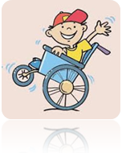

Olá queridos cursistas,
Bem vindos ao tópico 2 de nossa aula sobre Educação Especial.
Vamos aproveitar para discutir um pouco mais sobre mais comuns de deficiência física no ambiente escolar.
Bons estudos!
TIPOS MAIS COMUNS DE DEFICIÊNCIA FÍSICA NO AMBIENTE ESCOLAR
Aqui, sugerir um texto para que siga especificando os principais tipos de deficiência física ocorrentes no ambiente escolar.
ENCEFALOPATIAS CRÔNICAS NÃO EVOLUTIVA
A encefalopatia crônica não evolutiva, no passado denominado como paralisia cerebral, é definida pela área da saúde como: Conjunto de sinais e sintomas que acometem as funções motoras. Em muitos casos acontecem por lesões não progressivas no cérebro comprometendo a rotina diária desse aluno. Essa deficiência compromete o equilíbrio, o comportamento e o movimento.
Em muitos casos as lesões ocorrem nos períodos, pré, Peri e pós natal, isto, na gravidez, ao nascer a após o nascimento dos sujeitos. Ocorrem em parte pelo desenvolvimento anormal do cérebro, trauma ou infecções, existem registros também provenientes de falta de oxigênio no cérebro, hemorragias e icterícia.
Fonte: http://daniele-biguelim.webnode.com.br/patologias-neurologicas/
Características comuns da encefalopatia crônica.
Inserir efeito a3_t3_gradativo_personagem seguido de texto:
Inicio do efeito
• Atraso na aquisição de habilidades neuropsicomotoras;
• Lentidão dos estágios evolutivos;
• Variação na sequência de habilidades;
• Padrão anormal de postura;
• Movimentos repetitivos;
• Comportamento infantilizado.
Finalizar efeito a3_t3_gradativo_personagem
ATENÇÃO
Vale ressaltar que nem todas as crianças com encefalopatia apresentam todas essas variedades de comportamento!
MENINGOMILOCELE
Consiste na malformação complexa do tubo neural, é congênita, acontece na terceira e quintas semanas de gestação.
Inserir efeito escrever seguido de texto:
Meningomilocele, caracteriza-se por uma falha no fechamento do tubo neural que compromete a medula, os arcos vertebrais e o manto cutâneo, localizando-se na linha média, em qualquer nível da coluna vertebral, tendo, no entanto, predileção pela região lombossacra, onde ocorrem 75% dos casos. A lesão pode estar completamente coberta por pele ou apresentar uma área de tecido róseo, ricamente vascularizado.
Finalizar efeito a3_t3_gradativo_personagem

NÃO ESQUEÇA DE FICAR DE OLHO NAS REFERENCIAS
Fonte: http://www.portaleducacao.com.br/medicina/artigos/11941/meningomielocele
Características mais comuns com alunos com Meningomilocele
Inserir efeito passa a página seguido de texto
Inicio do efeito
• Pouca mobilidade;
• Alterações de membros superiores;
• Incontinência urinária;
• Infecção urinária;
• Refluxo;
• Deformidades de tronco;
• Fraturas;
• Retardo no desenvolvimento neuropsicomotor;
• Problemas visuais e auditivos;
• Alterações de fala;
• Déficit de atenção.
Finalizar efeito passa a página seguido de texto
Responsáveis: Milvane Regina Eustáquia Gomes Vasconcelos, Daniela Iara, Joelma Xavier
Centro de Educação a Distância do Ceará - CED